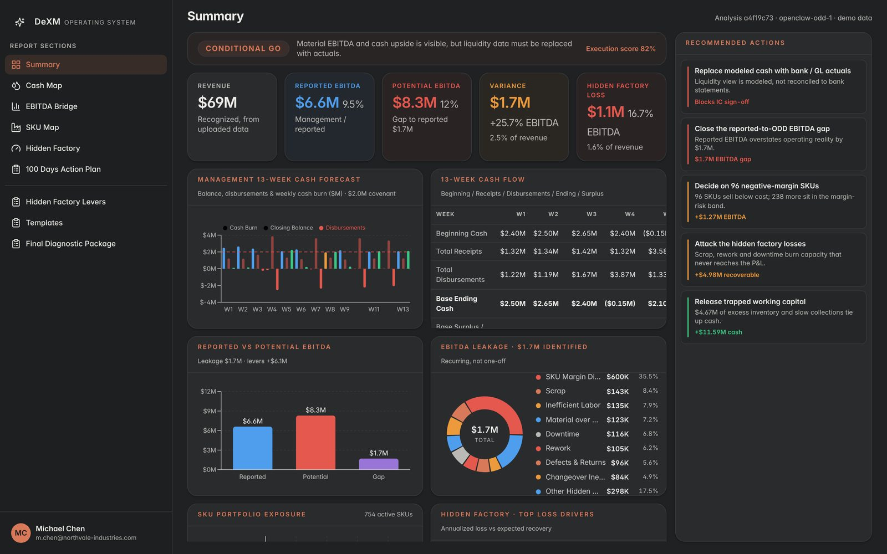

When performance breaks,
execution matters.
DeXM Management works alongside PE sponsors, owners and management teams of manufacturing companies to stabilize cash, rebuild EBITDA, and restore and create enterprise value.
We operate inside the business, not around it: cash first, then EBITDA, then the operating system that keeps the gains and protects enterprise value.
Three engagements. One mandate: enterprise value.
Interim leadership, diagnostic capability, or the team that runs the first 100 days, depending on where the business is.
Turnaround & Performance Improvement
Interim CEO, CRO or Operating Partner support when performance has broken and the clock is running: liquidity, 13-week cash, working capital, EBITDA recovery.
Learn moreOperational Diagnostic & ODD
A quantified view of where value is leaking, before close or after: EBITDA leakage, SKU and customer profitability, capacity, scrap and working capital.
Learn more100-Day Plan Execution
A disciplined sequence, not a deck. Stop the bleeding, rebuild EBITDA, then install the KPIs, S&OP and cadence that make it stick.
Learn moreTwenty years. Thirty-plus situations.
Results from transformation and special-situation engagements led as CEO, COO, Interim Executive and Operating Partner.
Selected results from individual engagements led as CEO, COO, Interim Executive or Operating Partner. Each figure comes from a specific situation; they are not averages and not every result applies to every engagement.
Operational underwriting in hours, not weeks.
DeXM OS turns ERP, Excel and CSV exports into a full operational diligence report: SKU economics, EBITDA leakage, cash release and a 100-day plan, built on the same SKU-to-cash model we use in the field.
- 10 diligence indicators and an investment recommendation
- EBITDA bridge from reported to normalised, every adjustment traced
- 13-week cash map, hidden factory and 100-day action plan

The 100-Day Plan
Same sequence, every engagement. Cash first, then EBITDA, then the system that makes it stick.
Stop the Cash Leakage
- Stabilize liquidity and control cash
- Reduce non-critical spend
- Improve collections and working capital
Improve EBITDA
- Pricing and procurement
- Labor productivity, scrap and rework
- SKU rationalization and throughput
Build the Operating System
- KPI management and S&OP
- Daily / weekly operating cadence
- Accountability and decision rights
Start with your own numbers.
Six working tools from our engagements. Your data stays in your browser.
Bottleneck Diagnostic
Score Sales, Money, System, People and Capacity to find the likely primary constraint on growth, with first steps.
Run the diagnostic13-Week Cash Forecast
Enter weekly receipts and disbursements or import Excel to see which week cash drops below your minimum.
Build a forecastP&L Statement
Monthly revenue and costs against your industry benchmark: gross margin, EBITDA and the upside to close the gap.
Open the P&LEBITDA Bridge
Baseline P&L plus the impact of each lever: target EBITDA, a risk-weighted view and the value created at your multiple.
Build the bridgeHidden Factory
Breakdowns, changeovers, speed losses and scrap per line: OEE, lost hours and what they cost in money.
Find the hidden factorySKU Analysis
Contribution, ABC classes and contribution per bottleneck hour: which products make money and which eat it.
Analyze SKUsBuilt for the people who own the outcome.
Boards, Investment Committees, lenders and management teams, when value is at risk and a plan is not enough.
- Private Equity Partners
- Operating Partners
- Portfolio Operations teams
- Private Credit investors
- Independent Sponsors
- Boards & CEOs of PE-backed companies
- Owners
- Management teams
Book an Intro Call
If a portfolio company is burning cash, missing plan, or approaching a covenant, the sooner we're in the room, the more options remain.
Book an Intro Call